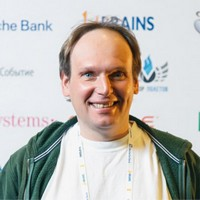
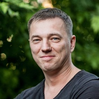
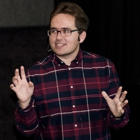
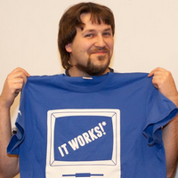
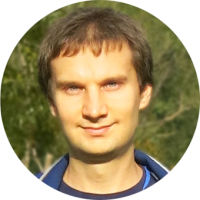

+++
date = "2017-12-13T21:02:04+03:00"
title = "JetConf"
+++
Архив докладов с сайта jetconf.by.
Belarus Java User Group не имеет никакого отношения к JetConf.
Sessions
RESTful Data Services with LinkRest : Building / Securing / Optimizing
Speakers: Andrus Adamchik
LinkRest is a small HTTP-based protocol and a Java framework that rethinks how REST APIs should be built. It turns each API endpoint into a graph query engine, giving client full control over the shape and contents of the requested data sets. The talk will start with the easy parts – how to reuse an existing ORM model (Apache Cayenne) and write simple Java one-liners to get a REST service up and running. Then we will delve into more advanced topics: alternative backends, graph access security and parallel data processing.
Building WebSockets Gaming Applications using the Atmosphere Framework
Speakers: Jean-Francois Arcand, Jeremie Papillon
This session will illustrate the Atmosphere Framework's concepts by building a reactive gaming application using WebSockets, Atmosphere, React Native and the Netty I/O Framework. First, we will explain how to implement an Atmosphere's WebSocketProcessor API as a foundation for a real time gaming application. Second, we will demonstrate how to use javax.inject for building injection of any kind of objects inside our WebSocketProcessor. Next we will use Doodgame, a real time gaming application developped by Yulplay.com, available on IOS and Android, to demonstrate how quickly a client can be build hooked to our new WebSocketProcessor. We will conclude with performance tips and tricks when building WebSocket applications using Atmosphere.
Weird Stream API
Speakers: Tagir Valeev
Java 8 Stream API is already here for a couple of years and programmers use it widely. However under the hood of magical API you can discover the plain Java code with has its own bugs, weirdness and whims. We will take a look on some code snippets which may unexpectedly show poor performance or strange behavior. Also we will extend Stream API with new intermediate operation trying to achieve the best performance.
HotSpot Intrinsics
Speakers: Volker Simonis
By definition, intrinsics are functions which are handled specially by the compiler or the VM. The HotSpot virtual machine supports intrinsics for specific API functions in the interpreter as well as in the C1 and C2 JIT compilers. In general, intrinsics are a great possibility for optimization. But they also come at a certain cost.
First of all, they are inherently platform and implementation dependent. If available, they can lead to consistency problems if they are implemented differently in the interpreter and the JIT compilers. Finally, they can change the program control (e.g. safepoint behavior) and observability (e.g. profiling, instrumentation) in subtle ways.
This talk will give you a short deep dive into the HotSpot Virtual Machine using the example of HotSpot intrinsics. It will explain how they are implemented and the implications this has for the Java VM. Finally, it will demonstrate how you can add a new intrinsic for your favorite Java method.
RxJava in legacy projects
Speakers: Tomasz Nurkiewicz
If you ever approached RxJava before you might come to a conclusion that this library solves problems most of us don't have. Reactively composing streams of data, virtual time, marble diagrams and event-driven programming - where most of our code is pretty much just transferring data from database to presentation layer.
During this live coding session there will not be a single slide, we start with empty IDE to step-by-step implement key constructs in RxJava. Most importantly we will discover how this high-level abstraction can help in existing projects. When to use RxJava, what problems does it solve and when using it is an excess of form over substance.
We will learn how to build highly reliable and concurrent applications, improve throughput and resource utilization without hurting readability and avoiding complexity.
Field Notes of a Command Line Ninja
Speakers: Rustam Mehmandarov
Ever wished you had superpowers? Ninja superpowers! So you can move swiftly across the keyboard, enjoy an arsenal of effective tools, and make tedious and mundane tasks fun?
Have you ever witnessed someone write fancy commands and perform magic from the console. Have you ever wished you could learn, or brush up on, those skills too? Maybe you want to be more effective at your everyday tasks, or need a new topic for the next family dinner?
Join us and learn some awesome command line ninja skills. You will be able to find something new no matter your level of experience. The audience will get a chance to show off their skills as well!
You can bring your PC/Mac with you and hack-along! Linux, Mac or Windows (with Cygwin).
Full-Text Search Explained
Speakers: Philipp Krenn
Today’s applications are expected to provide powerful full-text search. But how does that work in general and how do I implement it on my site or in my application?
Actually, this is not as hard as it sounds at first. This talk covers:
- How full-text search works in general and what the differences to databases are.
- How the score or quality of a search result is calculated.
- How to implement this with Elasticsearch.
Attendees will learn how to add common search patterns to their applications without breaking a sweat.
Java 8 Support at the JVM Level
Speakers: Nikita Lipsky
Java SE 8 has brought lambdas, default methods, type annotations, compact profiles, etc. As a result, the Java SE platform specification was changed to reflect new features.
The session shows how the new Java 8 features have been implemented in Excelsior JET JVM, written from scratch, very different from the Oracle HotSpot JVM, but compatible with the Java SE specification.
As a result, an attendee will refresh his/her memory regarding new Java 8 features, will learn how they affected the JVM specification, how the lambda expressions are translated into Java bytecode and how they can be optimized at the JVM level.
How shit works: the CPU
Speakers: Tomer Gabel
The beautiful thing about software engineering is that it gives you the warm and fuzzy illusion of total understanding: I control this machine because I know how it operates. This is the result of layers upon layers of successful abstractions, which hide immense sophistication and complexity. As with any abstraction, though, these sometimes leak, and that's when a good grounding in what's under the hood pays off.
The second talk in this series peels a few layers of abstraction and takes a look under the hood of our "car engine", the CPU. While hardly anyone codes in assembly language anymore, your C# or JavaScript (or Scala or...) application still ends up executing machine code instructions on a processor; that is why Java has a memory model, why memory layout still matters at scale, and why you're usually free to ignore these considerations and go about your merry way.
You'll come away knowing a little bit about a lot of different moving parts under the hood; after all, isn't understanding how the machine operates what this is all about?
Immutable Infrastructure: Rise of the Machine Images
Speakers: Axel Fontaine
The cloud is the new normal and it is time to rethink how we see machines and deployments. We have been piling layer upon layer of complexity for too long. But why should it be this way? It is time to radically simplify all this.
In this talk, we'll throw general-purpose operating systems, snowflake servers and runtime provisioning out the door. Instead you'll see how servers become disposable, how machine images are generated from scratch in seconds and how to achieve perfect environment parity from dev to prod.
This is Immutable Infrastructure. It is a profoundly important change as to how we view and treat our systems. We'll go deep. We'll look at how this affects scaling, logging, sessions, configuration, service discovery and more. We'll also look at how containers and machine images compare and why some things you took for granted may not be necessary anymore.
But beware, neither sacred cows nor kittens will be spared!
DROP DATABASE - galactic story
Speakers: Jaroslaw Ratajski
So You thought databases might be useful. I will show You why this is ridiculous idea.
Database is just the thing that kill performance of you system (100 times), destroys design and pollutes code. Besides it causes a great loss of information. Really, if you care about your data do not make a mistake and do not put them into Tables, JSONs or whatever. You can do it better.
During the presentations you will see how to code systems NORMALLY and compare it to weird things such as Hibernate or JPA. You will learn that best place for your data is RAM !!! :-) And this all from the guy who was writing JEE systems with SQL (and not only) for the last 15 years. This guy (me) was even kind of evangelist for JEE, and introduced Hibernate and JPA in a few companies. (I am do sorry for that). And we will be talking about facts. Code is here .
JDBC based frameworks racing
Speakers: Vladislav Zablotsky
There are more and more JDBC based frameworks each year every one of them promote itself as modern, fast and better than others in any way. But how all this can be applied in real life? Do we really know what price with respect to performance for next “more handy tool”? I’ve tried to test most popular frameworks against each other: native JDBC, EclipseLink, Hibernate, SpringJDBC, SpringData, MyBatis etc.
No container: a Modern Java Stack with Bootique
Speakers: Andrus Adamchik
Java containers appeared back in the era of big expensive hardware and monolithic applications, and currently feel like an impediment to Java progress. More and more people opt out of containers in favor of runnable jars, especially with the advance of microservices architectures. Andrus Adamchik will present a new open source tool called Bootique, a pluggable and extensible technology intended for various kinds of container-less Java apps - REST services, webapps, job runners, desktop apps and what not.
video, presentation
An Immutable Object-Oriented Web Framework
Speakers: Yegor Bugayenko
JSP, JSF, Spring, Play, Spark and many other web development frameworks are very popular, but very procedural. They don't really respect the principles of encapsulation, they are full of static methods, setters-and-getters, singletons, NULL references, and other OOP anti-patterns. Using that frameworks turn us into procedural programmers writing in Java syntax. Takes.org is a young project that is making an attempt to change the landscape of Java web frameworks, but introducing an immutable and truly OOP design into it.
code, video
Groovy Puzzlers S03 - The Unstoppable Puzzlers Hit Again!
Speakers: Baruch Sadogursky, Kirill Tolkachev
Did you think that we were out of puzzlers?! Well, we might be - but the Groovy community sure isn't! Per usual, we've got a bunch of awesomely puzzling contributions and you are going to have a shot at winning one of the prizes. Attend this session to have some fun while getting a workout in for those muscles - you'll tease your brain and then stretch out for the flying t-shirts too!
video, presentation
Standardize Caching in Java: JCache
Speakers: Alparslan Avci
The JCache is the new standardized Java caching layer API which is specified by the Java Community Process (JCP) as Java Specification Request (JSR) 107. It provides a common way for applications to use and adopt caching thus allowing developers to focus on application development and avoid the burden of implementing caches themselves. In this presentation, we will give an overview of the API itself at a glance and see what JCache brings us. Also some tips will be shared for developers which will use JCache in their applications. Lastly, a simple demo will be run to make the audience understand JCache better by using a vendor implementation of the API.
video, presentation
Hadoop Jungle: the world of wild algorithms and poisonous JVMs
Speakers: Alexey Zinoviev
If you think that all deals with Hadoop cluster is only MapReduce job and Hive queries writing, you are mistaken. Incomplete utilization of JVM resources leads to the development degradation. As a result you will fire into the air a wad of money each time when your read or shuffle your data.
Let's put on a pith helmet, getting vaccinated against arrogance and go chop vines of nonoptimal solutions.
We'll go to the jungle and tamed the wild elephant Hadoop. Afterwards we will give an overview of different JOIN implementations. Also we'll obtain power over the redirection of data to different partitions.
Okay, but seriously, during this lecture we will discuss following things:
- Hadoop and HDFS daemons as a typical Java - applications
- Hadoop Java API Features
- YARN containerization approach
- The limits of customization in Hadoop
- Different approaches to the implementation of the JOIN
- Directed acyclic graph (DAG) of MR jobs
- Performance tips
- JVM settings what you really need
- Development, debugging and testing phases
This topic is the best choice for anyone who already know all the hassle with BigData and has some experience with the Hadoop, but wants to know more about its features.
video, presentation
Social networks and recommendation engines, here comes Neo4j
Speakers: Jaroslaw Palka
RDBMS, key-value stores, column family, document and time series databases, you probably know it all, played with it, used it here and there. This time I am going to show you graph database, Neo4j and how it plays nicely in such domains like social networks and recommendation engines. I truly believe graphs are the ultimate data model, which directly translates into your brain cells and the ways we human think, they are natural for us. So if you mix it powerful query language called Cypher, you could conquer the world with tricky queries. During the talk I will show two data models, my email inbox and movie recommendations, how to model them as graphs and how to build layers of information and knowledge using graphs, nodes, materialized relations and indexes.
video
MyBatis, Thanks God not JPA
Speakers: Vladislav Zablotsky
Nowadays there are plenty different implementations over JPA. Comparing to JDBC JPA has many advantages and can simplify development in some way. But everything comes with a price. Do we really need such huge frameworks to simplify our DB interactions? The answer is No. All you need to know is SQL, MyBatis will do the rest with almost no extra coding.
code, video, presentation
Apache Cassandra 3 New Cool Features
Speakers: DuyHai Doan
Cassandra 3.0 has been released for a while, it's high time to look at the cool new features:
- The new User Defined Functions and User Defined Aggregates which allow you to create code in the language of your choice (JVM compatible) and push the computation to the server
- The JSON syntax that can be used to push data directly into Cassandra without the pain of converting JSON to regular literal values
- The new Materialized Views that make de-normalization easier for the developers
- The new full text search feature that will be available soon in Cassandra 3.4, allowing you to perform dynamic queries on your Cassandra data
video, presentation
Apache Cayenne: Java ORM Alternative
Speakers: Andrus Adamchik
Apache Cayenne is a mature full-featured Java ORM. The presentation will talk about Cayenne approach to object persistence, including overall philosophy and the differences with JPA/Hibernate. It will highlight such things as transaction management, mapping workflow, as well as the new APIs in the latest Cayenne 4.0.
video, presentation
Improve your tests quality with Mutation Testing
Speakers: Nicolas Frankel
Unit testing ensures your production code is relevant. But what does ensure your testing code is relevant? Come discover mutation testing and make sure your never forget another assert again.
In the realm of testing, the code coverage metrics is the most often talked about. However, it doesn't mean that the test has been useful or even that an assert has been coded. Mutation testing is a strategy to make sure that the test code is relevant.
In this talk, I will explain how Code Coverage is computed and what its inherent flaw is. Afterwards, I will describe how Mutation Testing work and how it helps pointing out code that is tested but leave out corner cases. I will also demo PIT, a Java production-grade framework that enables Mutation Testing on a simple code base. If time allows, a demo will also show how PIT can be integrated with Sonar.
video, presentation
Testing RESTful services: The What, The How and The Automated
Speakers: Alexey Buzdin
Nowadays REST is a default architectural pattern for developing web services. But with great power comes great responsibility! Let's talk about what should be pinpointed and tested on a RESTful API level, what are the tips and tricks, where you could stumble upon common problems and what are the options on writing a beautifully crafted, maintainable test suit with Java or without. Furthermore let's talk about how to automate the whole beast to fit your delivery pipeline.
video, presentation
Advanced testing tools
Speakers: Tomasz Borek
JUnit 5.0.0-ALPHA was released on February 1st, 2016. It went forward with large strides and has incorporated number of features only TestNG had so far (grouping tests, for instance). I'd like to NOT leave the IDE and show you number of those.
We'll cover parametrized testing with JUnit 5 and older, via Zohhak or JUnitParams. We'll talk about database testing with DBUnit, DataBene Benerator, LiquiBase and Spring Data.
We'll delve into interesting things like system tests (for system-wide concerns) and some tools for NON-functional requirements, like system stability or high reliability or speed.
I'll cover many tools, but due to limited time, none will be covered in-depth (as each would have taken whole session if that were to happen). Each tool will be covered with less-experienced audience in mind, so that usage and benefits would be clear.
video, presentation
How to get rid of Obsession?
Speakers: Sebastian Malaca
Being obsessed means "to preoccupy or fill the mind of (someone) continually and to a troubling extent". SOLID, design patterns, KISS, DRY, GRASP, high cohesion and low coupling, refactoring, testing, code review, etc. And all of this for the sake of code's quality and maintainability. All of this for the sake of code's perfection.
You have to take care of the code, but you also have to know when you can leave it as it is.
video, presentation
Kotlin: Making JVM Development Fun Again
Speakers: Dmitry Jemerov
Kotlin is a new programming language recently released by JetBrains. Kotlin's key values include pragmatism, clarity, safety and 100% Java interoperability. Kotlin works great everywhere where Java is being used today, including server-side enterprise development and Android apps. In this talk, I'll introduce you to the language and the tools which are available for it, and give you a tour of the language's syntax and main distinguishing features.
video, presentation
Kotlin in real projects: pragmatic opinion on pragmatic language
Speakers: Anton Keks
Kotlin is a marvelous JVM language that many have waited for. While we already have Java 8 and some people have migrated away from JVM while waiting for a more productive language, Kotlin finally is here, promising lots of good stuff, but still allowing us to use the cross-platform and highly optimized JVM and many of familiar frameworks.
However, nothing comes without drawbacks. There have been some controversial decisions while designing the language that affect what is convenient to do in the language and what is not so. Moreover, Kotlin is yet to deliver many of its promises, like compilation speed.
In this talk I'll talk about real life experience of using Kotlin in an Agile way, the obstacles that you may encounter and how to overcome them.
video, presentation
The Darkside of Kotlin
Speakers: Ruslan Ibragimov
On one hand Kotlin is a new language that has a great interoperability with Java, any Java developer can easily understand and write on Kotlin. On the other side Kotlin has introduced many new concepts which are new to Java. About these concepts we will talk during live coding.
video
Caught in the Act: Kotlin Bytecode Generation and Runtime Performance
Speakers: Dmitry Jemerov
In this talk, we'll dive into the details of how various language features supported by Kotlin are translated to Java bytecode. We'll use the JMH microbenchmarking tool to study the relative performance of various constructs and to understand how we can ensure top performance of the Kotlin code that we write.
video, presentation
Developing Modular Software: Welcome to Hell!
Speakers: Baruch Sadogursky
Using software modules today is the default way of working for most systems and frameworks. With the advent of many software languages and OSS frameworks, new module systems are constantly created and new module ecosystems start to prevail. This trend is horizontal and covers operating system packages, language libraries and application modules (plugins). But while some module systems are nicer to use, others are repeating past mistakes and are a daily source for developer agony and pain. In this short talk I will present the "lessons learned" at JFrog, where we make software for managing software libraries and deal with many types of module systems. This talk will show what works and what doesn't work in a module system; what features can make a module ecosystem thrive or fail; and why, despite all downsides, modules are here to stay and conquer more space as the Cloud continues to grow.
video
A Language is More Than a Language
Speakers: Bruce Eckel
In the early days, you always purchased your compiler. The language and implementation decisions were controlled by the vendor for their own ends. Programming was often an isolated process. Your code was your own. You wrote it, tested it (or not) and consumed it in relative obscurity. With the rise of open source, programming languages are designed in public, implementations are free, and much of the code you write is public. Coding is now a community activity. For a new language to be successful, it must first become an entire ecosystem, including extensive standard libraries, a build tool, a test framework, a code formatting style and checking tool, and now even a package manager and official repository for add-on libraries. This has become the standard checklist for considering a new language. But that's still not enough. We now expect a language to have a code of conduct and a friendly community, and that requires leaders to develop a culture of kindness. In this presentation, I will look at a number of programming languages and the ways that they have succeeded or failed in creating ecosystems.
video, presentation
Java in production for Data Mining Research projects
Speakers: Alexey Zinoviev
Java is often criticized for hard parsing CSV datasets, poor matrix and vectors manipulations. This makes it hard to easy and efficiently implement certain types of machine learning algorithms. In many cases data scientists choose R or Python languages for modeling and problem solution and you as a Java developer should rewrite R algorithms in Java or integrate many small Python scripts in Java application.
But why so many highload tools like Cassandra, Hadoop, Giraph, Spark are written in Java or executed on JVM? What the secret of successful implementation and running? Maybe we should forget old manufacturing approach of dividing on developers and research engineers in production projects?
During the report, we will discuss how to build full Java-stack Data Mining application, deploy it, make charts, integrate with databases, how to improve performance with JVM tuning and etc.
Attendees of my talk will become familiar with the development and deploy of an research Java projects, Hadoop/Spark basics and will get useful tips about possible integration ways.
video, presentation
Spring The Ripper
Speakers: Evgeny Borisov
Why should we know about Spring internals? It works! So use it and enjoy! However, as always, in order to use Spring in most efficient way, you must know, what is under the fork. Only in case you really understand its internals you will be able to use all power of Spring. You will be able to customize this framework according to challenges of your project, to achieve best performance and solve any problem without applying to Spring-support center.
During the talk following topics will be covered:
- How does Spring impact the performance of your application?
- What are the phases of Spring lifecycle?
- What is ApplicationContext structure?
- “You can’t do it with Spring!” – or maybe you can?
video, presentation
Spring Puzzlers. The Greatest Hits
Speakers: Evgeny Borisov, Baruch Sadogursky
Everyone knows, that Spring is one of the most powerful and useful frameworks for Java. So how deep are you familiar with it?
Level 1 – You know how to use Spring basic without understanding how it actually works under the hood.
Level 2 – You understand Spring internals, so you can customize it in accordance with the needs of your project.
We offer you an upgrade to Level 3 – to obtain knowledge of very particular but important details about Spring. This session includes many intricate riddles about Spring, which were gathered from real production java projects. Solving them will help you to acquire very important knowledge about Spring and will protect you from different mystical bugs.
video, presentation
TDD for database related code, how is it possible?
Speakers: Mikalai Alimenkou
TDD style proved itself as very reliable and quick way of business tasks solving with code. But most of examples on trainings and in the internet show how to apply TDD to simple input/output code or interface based dependencies with mocking techniques. What about other areas of application development like database related code? Could it be developed with TDD style? What does TDD bring to developer? I will try to answer these questions in my talk and show on practical examples how helpful TDD is for database code, how it reduces risks and opens the door for refactoring techniques. As bonus NoSQL solutions will be covered as well, that should make this topic popular even more!
code, video, presentation
Distributed Rate Limiter. Generic Software Engineering Practices
Speakers: Uladzimir Liashkevich
Online resources oftentimes have to deal with surge of incoming traffic. It can be caused by an increased demand of the service it provides. Slashdot effect or DDoS attack can lead to that as well.
In this talk, we will consider request rate limiting pattern that one can employ in their online request processing systems to provide the initial line of defense. Several tools are already available to Java developers that can work in simple scenarios. Additional measures are required in case a distributed service accesses an external resource that has a limited capacity to handle requests.
The talk also briefly covers broader topics, of how to come up with meaningful software engineering practices. This can have direct impact on developers’ day-to-day effectiveness. Besides developers, the talk can be especially interesting to team leaders and technical managers.
video, presentation
Java byte code in practice
Speakers: Rafael Winterhalter
At first glance, Java byte code can appear to be some low level magic that is both hard to understand and effectively irrelevant to application developers. However, neither is true. With only little practice, Java byte code becomes easy to read and can give true insights into the functioning of a Java program. In this talk, we will cast light on compiled Java code and its interplay with the Java virtual machine. In the process, we will look into the evolution of byte code over the recent major releases with features such as dynamic method invocation which is the basis to Java 8 lambda expressions. Finally, we will learn about tools for the run time generation of Java classes and how these tools are used to build modern frameworks and libraries. Among those tools, I present Byte Buddy, an open source tool of my own efforts and an attempt to considerably simplify run time code generation in Java.
video, presentation
How "final" is final?
Speakers: Volker Simonis
Altough the concept of "final" fields is quite simple, its implementation in Java can lead to surprising effects. First of all, the Java VM and Java language have a slightly different understanding of "final". Second (and unfortunately) declaring a field as final doesn't mean that the VM or the programmer can really rely on its immutability.
This talk will show the differnt aspects of "finality" and their impact on the Java compiler and the Java VM. It will demonstrate how finality can be circumvented in Java with the help of reflection or sun.misc.Unsafe. And finally it will discuss the impacts this has on the optimzations done by the JIT compiler.
video, presentation
Atomics, CAS, and Nonblocking Algorithms
Speakers: Alexey Fyodorov
This updated talk will dive you into disadvantages of locking, CAS operations, Java atomic variable classes and a couple of nonblocking algorithms: nonblocking stack and nonblocking queue. We will also talk about ABA problem. The talk is based on JCIP (§15) and TAoMP (§§ 5, 7, 10, 11). It will be interesting for Java programmers who have heard about CAS and lock-free, but who have no experience in writing non-blocking code.
video, presentation
An introduction to JVM performance
Speakers: Rafael Winterhalter
Writing software for a virtual machine allows developers to forget about machine code assembly, interrupts and processor caches. This makes Java a convenient language, but all too many developers see the JVM as a black box and are often unsure of how to optimize their code for performance. This unfortunately adds credence to the myth that Java is always outperformed by native languages. In this talk we'll take a peek at the inner workings of the HotSpot Virtual Machine, its Just-In-Time Compiler and the interplay with a computer's hardware. From this, we will understand the more common optimizations that a virtual machine applies to be better equipped to improve and to reason about a Java program's performance, and how to correctly measure runtime!
video, presentation
Do we need Unsafe in Java?
Speakers: Andrei Pangin
Java platform is highly appreciated for its security features: type safety, bounds checking, access control, automatic memory management, etc. The Virtual Machine provides a managed environment to guard applications from typical run-time problems. Today, however, more and more developers opt to break the barrier and escape from JVM sandbox. There is hardly a Senior Java developer who has never heard of sun.misc.Unsafe. Though it has always been a private API intended for JDK internal use only, the popularity of Unsafe has grown too fast, and now it is used in many open-source projects. OK.RU is not an exception: its software also heavily relies on Unsafe APIs.
During this session we'll try to understand what is so attractive about Unsafe. Why do people keep using it regardless the warnings of removal from future JDK releases? Are there any safe alternatives to private API or is it absolutely vital? We will review the typical cases when Java developers prefer to go unsafe and discuss major benefits and the drawbacks of it. The report will be supported by the real examples from OK.RU experience.
video, presentation
The Epic Groovy Puzzlers. Directors' Cut
Speakers: Baruch Sadogursky, Evgeny Borisov
Remember the epic Java Puzzlers? Here’s the Groovy version, and we have some neat ones! We gathered the most puzzling, challenging and funny ones from the first two seasons of the Groovy Puzzlers running across the world and contributions from the truly Groovy Senseis make this talk an unforgettable journey to Groovy's O_O.
In this talk you’ll have the expected dose of fun and enlightenment hearing about mistakes and failures, great and small, in a real hardcore Groovy development.
video, presentation
Scala perfomance for those who doubt
Speakers: Roman Grebennikov
Scala language has a lot of nifty features like pattern matching, recursion, collections with lambdas and other things from functional programming world. And all these features are combined together in a way that makes programming happier.
But all these dreams about FP magic can be easily destroyed by the fact, that "when I rewrote all my spaghetti Java code to a Scala one-liner, why did it become three times slower?". Brutal reality hints us that all these modern high-level abstractions may hide monsters inside and a comfort you get by using them has it's own price. And if you develop something more complex than a simple CRUD application and it's even slightly connected with performance, you must clearly understand how do all these "monads" behave.
This talk will tell you about magic performed by scala compiler, will show you a couple of horror stories about scala performance with explanations and solutions:
- JMH and how to use it with Scala.
- What happens when you hit 'compile' button.
- Pattern-matching, tail recursion and collections under the hood.
- How HotSpot optimises your code.
Parental advisory: 18+, explicit x86_64 assembly inside.
video, presentation
Streams: reactive? functional? Or: akka- & scalaz- streams side-by-side?
Speakers: Adam Warski
Stream data processing is becoming increasingly popular, providing elegant abstractions to solve a large number of everyday problems. Plus it’s at the core of the “reactive” movement! There are two popular libraries for single-node stream processing in the Scala ecosystem: akka-stream and scalaz-stream.
Both libraries share a common design goal, to provide compositionality, but they take different routes to satisfy that requirement. Akka-stream puts an emphasis on implementing the reactive streams standard and is actor-based, while scalaz-stream aims at isolating effects and providing a possibly pure FP library.
During the *live-coding* presentation, we’ll implement a couple of examples using both libraries, introducing their core concepts and highlighting key differences.
It will be really useful for Java developers familiar with Java 8 features to dive deeper into functionl world.
code, video
Domain-specific Hotspot Optimization with Scalan
Speakers: Alexander Slesarenko
While high-level abstractions greatly simplify program development, they ultimately need to be eliminated to produce high-performance code.
I will present Scalan, a framework which enables compilation of high-level object-oriented-functional code in Scala into high-performance low-level code.
Using simple examples we will look at compilation pipeline of Scalan in action. We start from DSL embedding, then discuss transformation and specialization techniques based on staged evaluation, then generation of efficient imperative code using Lightweight Modular Staging framework and finally performance evaluation and speedups.
video, presentation
Groovy AST Transformations: Getting practical in an hour
Speakers: Baruch Sadogursky
If you know Groovy, you probably know it has very powerful AST transformations. You might although think that writing your own AST transformations is something complicated, and takes deep knowledge of academical compilers, abstract syntax tree and other neat stuff. Although for deep understanding of some advanced AST concepts that might be true, Groovy makes it super-easy to get started with creating your own magic with AST Transformations. Come to this talk to hear (but mostly see) how AST transformations work, and what it takes to write your own (hint: it won't be complicated).
code, video
Speakers
Jean-Francois Arcand
Sessions: Building WebSockets Gaming Applications using the Atmosphere Framework

Jeanfrancois is the co-founder and CTO at Yulplay, the creator of Doodgame, the ultimate real time app for sport fans! Jeanfrancois is the creator of Atmosphere, a framework for building powerful websockets and asynchronous applications. The Atmosphere Framework is integrated by more than 50 Java frameworks and libraries, and heavily used all around the world. He is also the author of the Grizzly Framework, the powerful NIO front end used by GlassFish/Payara and the creator of WCS, an asynchronous HTTP/WebSocket client library. All his projects are open source and available here
Jeremie Papillon
Sessions: Building WebSockets Gaming Applications using the Atmosphere Framework
Jeremie is the Lead Mobile Developer at Yulplay, the creators of Doodgame (the ultimate app for sport fans). He's passionate about React and React Native, and has been working for the past year on building and optimizing a real-time mobile app using WebSockets and a Java back-end server. He keeps himself up-to-date with technology and always wants to learn new stuff. On a side note, he's Canadian (yes, he plays ice hockey) and he wants to discover new beers and the world!
Tagir Valeev
Sessions: Weird Stream API
Tagir is the author of StreamEx, very useful Java 8 Stream extension library that adds additional parallelism features on top of standard streams. He’s a speaker at conferences, and has contributed a dozen of patches into OpenJDK Stream API (including bug fixes, performance optimizations and new features). He’s interested in static code analysis and works on a new Java bytecode analyzer.
Volker Simonis
Sessions: HotSpot Intrinsics, How "final" is final?
Volker works for SAP in the SAP JVM Technology group. OpenJDK contributor from the very beginning and helped SAP and the SAP JVM team engage in the OpenJDK project. Currently, he's the Project Lead of the OpenJDK PowerPC/AIX and s390x porting projects, a JDK8 committer and JDK9 reviewer. He also represents SAP in the JCP.
Tomasz Nurkiewicz
Sessions: RxJava in legacy projects
Tomasz spent half of his life on programming, for the last decade professionally in Java land. Loves back-end, tolerates JavaScript. Passionate about alternative JVM languages. Disappointed with the quality of software written these days (so often by himself!), hates long methods and hidden side effects. Interested in charting, data analysis and reporting. Believes that computers were invented so that developers can automate boring and repetitive tasks. Also their own.
On a daily basis works in financial sector. Involved in open-source, DZone’s Most Valuable Blogger, used to be very active on StackOverflow. Author, trainer, conference speaker, technical reviewer, runner. Claims that code not tested automatically is not a feature but just a rumour. Currently writing a book Reactive Programming with RxJava for O'Reilly.
Rustam Mehmandarov
Sessions: Field Notes of a Command Line Ninja
Rustam is the leader of the Norwegian Java User Group - javaBin, and a competency network coordinator for databases and information management at work. One of the organizers of JavaZone and Arctic IoT Challenge. Speaker. He holds a master’s degree in Computer Science from the University of Oslo, and he has been working as a developer, lead programmer and architect for over 10 years. In addition to being passionate about agile development, web development, architecture and geographical information systems, he is also a guru of both Linux and Windows worlds. On his spare time he enjoys working out, as well as coding in Python and Java (but not simultaneously). Rustam frequently speaks at both national and international conferences, and events at various Norwegian universities.
Philipp Krenn
Sessions: Full-Text Search Explained
Philipp is a Developer Advocate at Elastic, spreading the love and knowledge of full-text search, analytics, and real-time data. He is a frequent speaker at conferences and meetups about all things search & analytics, databases, cloud computing, and devops. Philipp lives in Vienna where he enjoys experimenting with software, organizing meetups, and sports.
Nikita Lipsky
Sessions: Java 8 Support at the JVM Level

Nikita is an initiator and a product lead of Excelsior JET project – certified Java SE implementation (JVM) with AOT compiler developed by Excelsior LLC. Working on the project since 1997 he took part in almost every activity of the project from the JVM core to product management and support. He is also experimenting (in a spare time) with open source projects exploring approaches and a concept of the next web.
Tomer Gabel
Sessions: How shit works: the CPU
Tomer is a programming junkie and computer history aficionado. Tomer's been around the block a few times before settling at Wix as a system architect. In the last few of years he's developed a major crush on Scala, promoting it within the Israeli software industry as part of Java.IL (Israeli Java user group) and Underscore (Israeli Scala user group) and organizing the annual Scalapeño conference in Tel-Aviv.
Axel Fontaine
Sessions: Immutable Infrastructure: Rise of the Machine Images
Axel is the founder and CEO of Boxfuse, the easiest way to deploy JVM, Node.js and Go applications to AWS. He is also the creator and project lead of Flyway, the open-source tool that makes database migration easy.
He is a Continuous Delivery and Immutable Infrastructure expert, a Java Champion, a JavaOne Rockstar and a regular speaker at many large international conferences. You can find him online at axelfontaine.com and on Twitter
Jaroslaw Ratajski
Sessions: DROP DATABASE - galactic story
He is a wizard. - He keeps systems alive even if they should not.
He is an architect. - He will show you how to code without design patterns, big JEE servers, databases and all that useless stuff.
He is a hacker. - He likes doing things you people wouldn't believe.
He is a leader. - He only lets the team do their job.
He is a detective. - He will find the problem ... even if there are not many clues.
He is an engineer. - He will keep your JVM at top speed.
Vladislav Zablotsky
Sessions: JDBC based frameworks racing, MyBatis, Thanks God not JPA
Vladislav came a long way from non IT guy to team lead. His path to Java was not so easy. He adapted html markup and debugged JavaScript using only alerts for IE6. Also he is guilty in php coding. At last he found himself in Java and looks like this ecosystem pretty comfortable for him. He doesn't want to stop, just need to move forward, develop skills, learn something new.
Yegor Bugayenko
Sessions: An Immutable Object-Oriented Web Framework

Yegor is a CTO and co-founder of Teamed.io, a software development company with a unique approach to management of distributed teams; a regular blogger at yegor256.com; a proud holder of PMP and OCMEA certifications;a hands-on Java developer and a lead architect of a few popular open source projects, including jcabi.com, takes.org, rultor.com and qulice.com. All ideas that he is trying to spread you can find at this wonderful book.
Kirill Tolkachev
Sessions: Groovy Puzzlers S03 - The Unstoppable Puzzlers Hit Again!
Principal Developer at Alfa-Laboratory. Kirill designs and develops different APIs for bank products. He builds principles and sets of instruments for building and adopting microservices architecture in the company. Familiar with DevOps methodology and has much experience with it. Big fan of Groovy, Gradle, Spring and Netflix OSS stack. Permanent resident of Razbor-Poletov podcast.
Alparslan Avci
Sessions: Standardize Caching in Java: JCache
Alparslan works for Hazelcast as a Senior Solutions Architect. He is a passionate Java developer, and loves to think in distributed and object-oriented way. Prior to joining Hazelcast, Alparslan worked in several Java projects including a web search engine and enterprise financial anti-fraud solutions. He also contributes to open-source projects like Apache Nutch and currently a PMC member in Apache Gora. Alparslan holds a MS degree in Software Engineering of Distributed Systems from Kungliga tekniska hogskolan in Stockholm, Sweden.
Alexey Zinoviev
Sessions: Hadoop Jungle: the world of wild algorithms and poisonous JVMs, Java in production for Data Mining Research projects

Passionate data mining and backend application developer.
Work projects are related to Java web-frameworks, Highload, NoSQL technologies.
Possibilities of the Hadoop/Spark projects are used for data processing. Research projects are related to large-scale road graph data processing, social network analysis, data mining, machine learning, traffic jams prediction, mathematical models of complex systems.
He is leader of the Google Developer Group in Russia and a Joker/Mobius program committee member. Also, he organized Java, Android conferences and GDG DevFest in Omsk during 2013-14. Now he is working in EPAM as Senior Training and Development Specialist.
Jaroslaw Palka
Sessions: Social networks and recommendation engines, here comes Neo4j
Jaroslaw has spent last 15 years of my life in IT working as database and system administrator, developer, architect, manager and "on site disaster engineer". At the moment he works as code mangler at Allegro, recovering from long journey as chief architect of a large SaaS platform for HR solutions. He was involved in small, medium and horribly and nonsense large systems, from "waterfall" through Agile to "no methodology" methodology. It all lead him to conclusion that it doesn't matter what you do as long as you do it right, keep it simple and use the right tool to do the job for you. In the meantime he fell in love it TDD and Software Craftsmanship, explored architectures and design of legacy systems and was trapped inside JVM, till death do as apart. He also spent a lot of time exploring ideas like system thinking, system dynamics, strange attractor and complexity theory. From time to time you can hear his low quality jokes about architecture at conferences in Poland. He is also trying to make a world a better place as blog author at GeekyPrimitives, trainer at Symentis and program committee lead at 4Developers and JDD conferences.
DuyHai Doan
Sessions: Apache Cassandra 3 New Cool Features
DuyHai Doan is a Cassandra technical advocate. He spends his time between technical presentations/meetups on Cassandra, coding on open source projects to support the community and helping all companies using Cassandra to make their project successful. Previously he was working as a freelance Java/Cassandra consultant.
Nicolas Frankel
Sessions: Improve your tests quality with Mutation Testing
Nikolas is Software Architect with 15 years experience consulting for many different customers, in a wide range of contexts (such as telecoms, banking, insurances, large retail and public sector). Usually working on Java/Java EE and Spring technologies, but with narrower interests like Software Quality, Build Processes and Rich Internet Applications. Currently working for an eCommerce solution vendor leader. Also double as a teacher in universities and higher education schools, a trainer and triples as a book author.
Alexey Buzdin
Sessions: Testing RESTful services: The What, The How and The Automated
Alexey is a passionate full-stack developer and trainer that is into cross-platform mobile tech. He always looks forward to talk about various technologies, technical challenges and share his opinion about them. High chance that you can see him speaking or stalking in pretty much all developers communities in Riga, Latvia (JUG.lv, LDN, Devclub, LatCraft etc). In addition he is also an organizer of Google Developers Group Riga that hosts monthly meetups about IT and tech.
Tomasz Borek
Sessions: Advanced testing tools

Tomasz is a coder from Poland. Hoping to learn something new every day.
Thankful to everybody who helps him while he hops along.
Proud of SCKRK and GeeCON. Co-leads: SCKRK, Polish JUG, Lambda Lounge Krakow. He is a flawed human, and unafraid to say so.
Into: people, software, music, role-playing, honesty, learning.
Dislikes: doing unnecessary things, doing "because I can".
Sebastian Malaca
Sessions: How to get rid of Obsession?
Sebastian is an experienced and dedicated software engineer specializing in object-oriented design and programming, software architecture, code quality and agile. His interests include testing, programming, software engineering and agile software craftsmanship. He's also a speaker (JDD, GeeCon, NDC), writer and contributor to several blogs (DZone, JavaCodeGeeks) about Software Development and Agile Software Craftsmanship.
Anton Keks
Sessions: Kotlin in real projects: pragmatic opinion on pragmatic language
Anton Keks is a software craftsman, co-founder of Codeborne, the only extreme programming shop in the region, frequent speaker at conferences, and a lecturer in Tallinn Technical University. He is also a strong believer in open-source software and agile development methodologies, author of a popular network tool - Angry IP Scanner, and a regular contributor to other open-source projects. Before founding Codeborne, Anton has led a team of developers of the award-winning internet-bank of Swedbank for 5 years, gradually introducing agile methods. During this time he has also co-founded Agile Estonia non-profit organization that organizes regular agile conferences in Estonia. During spare time he plays guitar, rides motorbike and travels to remote corners of the world.
Ruslan Ibragimov
Sessions: The Darkside of Kotlin
Ruslan is a leader of Belarus Kotlin User Group and Java Professionals By driver, team leader at Itransition. Every day he reads news and articles from more than 500 sources using RSS. He likes to explore new technologies and aspires to get a deep understanding of the problem. Hackathons, meetups and conferences? Yes this is about him. Linux and other Free Software - runs the world.
Bruce Eckel
Sessions: A Language is More Than a Language
Bruce Eckel is the author (with Dianne Marsh) of Atomic Scala, Thinking in Java (Prentice-Hall, 1998, 2nd Edition, 2000, 3rd Edition, 2003, 4th Edition, 2006), the Hands-On Java eSeminar (available on the Web site), Thinking in C++ (PH 1995; 2nd edition 2000, Volume 2 with Chuck Allison, 2003), C++ Inside & Out (Osborne/McGraw-Hill 1993), and First Steps in Flex (with James Ward, 2008) among others. He's given hundreds of presentations throughout the world, published over 150 articles in numerous magazines, was a founding member of the ANSI/ISO C++ committee and speaks regularly at conferences. He was for many years the chair of both the C++ and Java tracks at the Software Development conference, is cofounder of the JavaPosse Roundup Conference and creator of the Scala Summit Conference. He provides public and private training and consulting in programming languages and software system design.
Mikalai Alimenkou
Sessions: TDD for database related code, how is it possible?
Java Tech Lead and experienced coach. Expert in Java development, scalable architecture, Agile engineering practices and project management. Having more than 11 years of development experience, specializes on complex distributed scalable systems. Active participant and speaker of many international conferences. Founder and coach in training center XP Injection. Works at Epam. Organizer and founder of Selenium Camp, JEEConf, XP Days Ukraine and IT Brunch conferences. Founder of active "Anonymous developers club" (uadevclub).
Uladzimir Liashkevich
Sessions: Distributed Rate Limiter. Generic Software Engineering Practices
Uladzimir is working with Java technologies since 2003. Nowadays mostly deals with big data and highly scalable systems. Also has always been interested in organizational level decisions and engineering practices that have positive impact on developers' productivity.
Currently serves as CTO at Geomotiv, AdTech and TV advertising technology company.
Rafael Winterhalter
Sessions: Java byte code in practice, An introduction to JVM performance
Rafael works as a software engineer in Oslo, Norway. He is a proponent of static typing and a JVM enthusiast with particular interests in code instrumentation, concurrency and functional programming. Rafael blogs about software development, regularly presents at conferences and was pronounced a Java One Rock Star. When coding outside of his work place, he contributes to a wide range of open source projects and often works on Byte Buddy, a library for simple runtime code generation for the Java virtual machine.
Alexey Fyodorov
Sessions: Atomics, CAS, and Nonblocking Algorithms
Java developer for 8+ years. Worked for Oracle for 3 years (JCK Team, Java Platform group). Leader of the St. Petersburg Java User Group, and CodeFreeze community, organizer of Russian Java conferences JPoint and Joker. Interested in Java runtime, multithreaded programming, Java compatibility and software engineering trade-offs. Since 2015 Technology Evangelist at Odnoklassniki.
Andrei Pangin
Sessions: Do we need Unsafe in Java?

Andrei is a lead software engineer at Mail.Ru Group. In efforts to build a fast and reliable platform for OK.RU social network he squeezes every cycle out of the Java server performance. Andrei's past experience at Sun Microsystems helps him to investigate Java Virtual Machine bugs and even to patch OpenJDK. He knows no limits in hacking Java and playing with undocumented APIs. These experiments are reflected in Andrei's presentations on Java internals. They’ve also inspired the project “one-nio” - the open-source framework for developing high-loaded servers in Java.
Roman Grebennikov
Sessions: Scala perfomance for those who doubt
Co-founder and distributed systems developer in Sociohub, activist of Voronezh Scala User Group. Went a long professional way from a graphics designer and C++ HFT developer to a Scala fanboy.
Adam Warski
Sessions: Streams: reactive? functional? Or: akka- & scalaz- streams side-by-side?
Adam is one of the co-founders of SoftwareMill, where he codes mainly using Scala and other interesting technologies. Adam is involved in open-source projects, such as Supler, Macwire, Hibernate Envers and ElasticMQ. He has been a speaker at major conferences, such as JavaOne, Devoxx, JavaZone or JFokus.
Apart from writing closed- and open-source software, in his free time he tries to read the Internet on various programming-related subjects, any ideas or insights end up on his blog.
Alexander Slesarenko
Sessions: Domain-specific Hotspot Optimization with Scalan
Alexander is a principal engineer at Huawei Research Center in Moscow. He is leading the Scalan project - a framework for creating high-performance DSLs in Scala. He also worked in the IT industry as software architect for several years.
JetConf.by в социальных сетях: